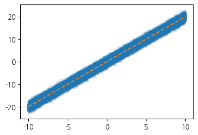
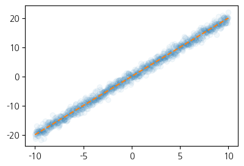

import torch
import matplotlib.pyplot as plt1. imports
plt.rcParams['figure.figsize'] = (4.5, 3.0)2. 신경망의 표현
- 신경망의 표현: \({\bf X} \to \hat{\bf y}\) 로 가는 과정을 그림으로 표현
A. 로지스틱
\[\underset{(n,1)}{\bf X} \overset{l_1}{\to} \underset{(n,1)}{\boldsymbol u^{(1)}} \overset{sig}{\to} \underset{(n,1)}{\boldsymbol v^{(1)}} =\underset{(n,1)}{\hat{\bf y}}\]
- 모든 observation과 가중치를 명시한 버전
(표현1)

- 단점: 똑같은 그림의 반복이 너무 많음
- observation 반복을 생략한 버전들
(표현2) 모든 \(i\)에 대하여 아래의 그림을 반복한다고 하면 (표현1)과 같다.

(표현3) 그런데 (표현2)에서 아래와 같이 \(x_i\), \(y_i\) 대신에 간단히 \(x\), \(y\)로 쓰는 경우도 많음

- 1을 생략한 버전들
(표현4) bais=False 대신에 bias=True를 주면 1을 생략할 수 있음

(표현4의 수정) \(\hat{w}_1\)대신에 \(\hat{w}\)를 쓰는 것이 더 자연스러움

(표현5) 선형변환의 결과는 아래와 같이 \(u\)로 표현하기도 한다.

다이어그램은 그리는 사람의 취향에 따라 그리는 방법이 조금씩 다릅니다. 즉 교재마다 달라요.
B. 스펙의역설
\[\underset{(n,1)}{\bf X} \overset{l_1}{\to} \underset{(n,2)}{\boldsymbol u^{(1)}} \overset{relu}{\to} \underset{(n,2)}{\boldsymbol v^{(1)}} \overset{l_2}{\to} \underset{(n,1)}{\boldsymbol u^{(2)}} \overset{sig}{\to} \underset{(n,1)}{\boldsymbol v^{(2)}} =\underset{(n,1)}{\hat{\bf y}}\]
참고: 코드로 표현
torch.nn.Sequential(
torch.nn.Linear(in_features=1,out_features=2),
torch.nn.ReLU(),
torch.nn.Linear(in_features=2,out_features=1),
torch.nn.Sigmoid()
)- 이해를 위해서 예젠에 다루었던 아래의 상황을 고려하자.

(강의노트의 표현)

(좀 더 일반화된 표현) 상황을 일반화하면 아래와 같다.

* Layer의 개념: \({\bf X}\)에서 \(\hat{\boldsymbol y}\)로 가는 과정은 “선형변환+비선형변환”이 반복되는 구조이다. “선형변환+비선형변환”을 하나의 세트로 보면 아래와 같이 표현할 수 있다.
- \(\underset{(n,1)}{\bf X} \overset{l_1}{\to} \left( \underset{(n,2)}{\boldsymbol u^{(1)}} \overset{relu}{\to} \underset{(n,2)}{\boldsymbol v^{(1)}} \right) \overset{l_2}{\to} \left(\underset{(n,1)}{\boldsymbol u^{(2)}} \overset{sig}{\to} \underset{(n,1)}{\boldsymbol v^{(2)}}\right), \quad \underset{(n,1)}{\boldsymbol v^{(2)}}=\underset{(n,1)}{net({\bf X})}=\underset{(n,1)}{\hat{\bf y}}\)
이것을 다이어그램으로 표현한다면 아래와 같다.
(선형+비선형을 하나의 Layer로 묶은 표현)

Layer를 세는 방법
- 제 방식: 학습가능한 파라메터가 몇층으로 있는지… <– 이것만 기억하세여
- 일부 교재 설명: 입력층은 계산하지 않음, activation layer는 계산하지 않음. <– 무시하세요.. 이러면 헷갈립니다..
- 위의 예제의 경우
number of layer = 2이다.
Hidden Layer의 수를 세는 방법
- 제 방식:
Hidden Layer의 수 = Layer의 수 -1<– 이걸 기억하세여..
- 일부 교재 설명:
Layer의 수 = Hidden Layer의 수 + 출력층의 수 = Hidden Layer의 수 + 1<– 기억하지 마세여 - 위의 예제의 경우
number of hidden layer = 1이다.
Important
무조건 학습가능한 파라메터가 몇겹으로 있는지만 판단하세요. 딴거 아무것도 생각하지마세여
## 예시1 -- 2층 (히든레이어는 1층) torch.nn.Sequential( torch.nn.Linear(??,??), ## <-- 학습해야할 가중치가 있는 층 torch.nn.ReLU(), torch.nn.Linear(??,??), ## <-- 학습해야할 가중치가 있는 층 )## 예시2 -- 2층 (히든레이어는 1층) torch.nn.Sequential( torch.nn.Linear(??,??), ## <-- 학습해야할 가중치가 있는 층 torch.nn.ReLU(), torch.nn.Linear(??,??), ## <-- 학습해야할 가중치가 있는 층 torch.nn.Sigmoid(), )## 예시3 -- 1층 (히든레이어는 없음!!) torch.nn.Sequential( torch.nn.Linear(??,??), ## <-- 학습해야할 가중치가 있는 층 )## 예시4 -- 1층 (히든레이어는 없음!!) torch.nn.Sequential( torch.nn.Linear(??,??), ## <-- 학습해야할 가중치가 있는 층 torch.nn.Sigmoid() )## 예시5 -- 3층 (히든레이어는 2층) torch.nn.Sequential( torch.nn.Linear(??,??), ## <-- 학습해야할 가중치가 있는 층 torch.nn.Sigmoid() torch.nn.Linear(??,??), ## <-- 학습해야할 가중치가 있는 층 torch.nn.Sigmoid() torch.nn.Linear(??,??), ## <-- 학습해야할 가중치가 있는 층 )## 예시6 -- 3층 (히든레이어는 2층) torch.nn.Sequential( torch.nn.Linear(??,??), ## <-- 학습해야할 가중치가 있는 층 torch.nn.ReLU() torch.nn.Dropout(??) torch.nn.Linear(??,??), ## <-- 학습해야할 가중치가 있는 층 torch.nn.ReLU() torch.nn.Dropout(??) torch.nn.Linear(??,??), ## <-- 학습해야할 가중치가 있는 층 torch.nn.Sigmoid() )
Important
문헌에 따라서 레이어를 세는 개념이 제가 설명한 방식과 다른경우가 있습니다. 제가 설명한 방식보다 1씩 더해서 셉니다. 즉 아래의 경우 레이어를 3개로 카운트합니다.
## 예시1 -- 문헌에 따라 3층으로 세는 경우가 있음 (히든레이어는 1층) torch.nn.Sequential( torch.nn.Linear(??,??), ## <-- 학습해야할 가중치가 있는 층 torch.nn.ReLU(), torch.nn.Linear(??,??), ## <-- 학습해야할 가중치가 있는 층 torch.nn.Sigmoid() )예를 들어 여기에서는 위의 경우 레이어는 3개라고 설명하고 있습니다. 이러한 카운팅은 “무시”하세요. 제가 설명한 방식이 맞아요. 이 링크 잘못(?) 나와있는 이유는 아래와 같습니다.
-진짜 예전에 MLP를 소개할 초창기에서는 위의 경우 Layer를 3개로 셌음. (Rosenblatt et al. 1962)
-그런데 요즘은 그렇게 안셈.. (그리고 애초에 MLP라는 용어도 잘 안쓰죠..)참고로 히든레이어의 수는 예전방식이나 지금방식이나 동일하게 카운트하므로 히든레이어만 세면 혼돈이 없습니다.
* node의 개념: \(u\to v\)로 가는 쌍을 간단히 노드라는 개념을 이용하여 나타낼 수 있음.
(노드의 개념이 포함된 그림)

여기에서 node의 숫자 = feature의 숫자와 같이 이해할 수 있다. 즉 아래와 같이 이해할 수 있다.
(“number of nodes = number of features”로 이해한 그림)

다이어그램의 표현방식은 교재마다 달라서 모든 예시를 달달 외울 필요는 없습니다. 다만 임의의 다이어그램을 보고 대응하는 네트워크를 pytorch로 구현하는 능력은 매우 중요합니다.
C. MNIST
\[\underset{(n,784)}{\bf X} \overset{l_1}{\to} \underset{(n,32)}{\boldsymbol u^{(1)}} \overset{relu}{\to} \underset{(n,32)}{\boldsymbol v^{(1)}} \overset{l_1}{\to} \underset{(n,1)}{\boldsymbol u^{(2)}} \overset{sig}{\to} \underset{(n,1)}{\boldsymbol v^{(2)}}=\underset{(n,1)}{\hat{\boldsymbol y}}\]
(다이어그램표현)

- Layer0,1,2 대신에 Input Layer, Hidden Layer, Output Layer로 표현함
- 위의 다이어그램에 대응하는 코드
- 가중치의 합은 784X32
net = torch.nn.Sequential(
torch.nn.Linear(in_features=28*28*1,out_features=32),
torch.nn.ReLU(),
torch.nn.Linear(in_features=32,out_features=1),
torch.nn.Sigmoid()
)3. CPU vs GPU
- 파이토치에서 GPU를 쓰는 방법을 알아보자. (사실 지금까지 우리는 CPU만 쓰고 있었음)
A. GPU 사용방법
- cpu 연산이 가능한 메모리에 데이터 저장
torch.manual_seed(43052)
x_cpu = torch.tensor([0.0,0.1,0.2]).reshape(-1,1)
y_cpu = torch.tensor([0.0,0.2,0.4]).reshape(-1,1)
net_cpu = torch.nn.Linear(1,1) net_cpu(x_cpu)tensor([[-0.8470],
[-0.8817],
[-0.9164]], grad_fn=<AddmmBackward0>)x_cputensor([[0.0000],
[0.1000],
[0.2000]])!nvidia-smiSat May 3 17:40:43 2025
+---------------------------------------------------------------------------------------+
| NVIDIA-SMI 535.161.08 Driver Version: 535.161.08 CUDA Version: 12.2 |
|-----------------------------------------+----------------------+----------------------+
| GPU Name Persistence-M | Bus-Id Disp.A | Volatile Uncorr. ECC |
| Fan Temp Perf Pwr:Usage/Cap | Memory-Usage | GPU-Util Compute M. |
| | | MIG M. |
|=========================================+======================+======================|
| 0 NVIDIA A100-SXM4-80GB On | 00000000:81:00.0 Off | On |
| N/A 60C P0 67W / 275W | N/A | N/A Default |
| | | Enabled |
+-----------------------------------------+----------------------+----------------------+
+---------------------------------------------------------------------------------------+
| MIG devices: |
+------------------+--------------------------------+-----------+-----------------------+
| GPU GI CI MIG | Memory-Usage | Vol| Shared |
| ID ID Dev | BAR1-Usage | SM Unc| CE ENC DEC OFA JPG |
| | | ECC| |
|==================+================================+===========+=======================|
| 0 0 0 0 | 6MiB / 81050MiB | 98 0 | 7 0 5 1 1 |
| | 3MiB / 131072MiB | | |
+------------------+--------------------------------+-----------+-----------------------+
+---------------------------------------------------------------------------------------+
| Processes: |
| GPU GI CI PID Type Process name GPU Memory |
| ID ID Usage |
|=======================================================================================|
| No running processes found |
+---------------------------------------------------------------------------------------+- GPU로 올리기
torch.manual_seed(43052)
x_gpu = x_cpu.to("cuda:0")
y_gpu = y_cpu.to("cuda:0")
net_gpu = torch.nn.Linear(1,1).to("cuda:0") !nvidia-smiSat May 3 17:41:54 2025
+---------------------------------------------------------------------------------------+
| NVIDIA-SMI 535.161.08 Driver Version: 535.161.08 CUDA Version: 12.2 |
|-----------------------------------------+----------------------+----------------------+
| GPU Name Persistence-M | Bus-Id Disp.A | Volatile Uncorr. ECC |
| Fan Temp Perf Pwr:Usage/Cap | Memory-Usage | GPU-Util Compute M. |
| | | MIG M. |
|=========================================+======================+======================|
| 0 NVIDIA A100-SXM4-80GB On | 00000000:81:00.0 Off | On |
| N/A 60C P0 70W / 275W | N/A | N/A Default |
| | | Enabled |
+-----------------------------------------+----------------------+----------------------+
+---------------------------------------------------------------------------------------+
| MIG devices: |
+------------------+--------------------------------+-----------+-----------------------+
| GPU GI CI MIG | Memory-Usage | Vol| Shared |
| ID ID Dev | BAR1-Usage | SM Unc| CE ENC DEC OFA JPG |
| | | ECC| |
|==================+================================+===========+=======================|
| 0 0 0 0 | 395MiB / 81050MiB | 98 0 | 7 0 5 1 1 |
| | 5MiB / 131072MiB | | |
+------------------+--------------------------------+-----------+-----------------------+
+---------------------------------------------------------------------------------------+
| Processes: |
| GPU GI CI PID Type Process name GPU Memory |
| ID ID Usage |
|=======================================================================================|
+---------------------------------------------------------------------------------------+- GPU에 메모리 올리면 GPU메모리가 점유됨
- cpu 혹은 gpu 연산이 가능한 메모리에 저장된 값들을 확인
x_cpu, y_cpu, net_cpu.weight, net_cpu.bias(tensor([[0.0000],
[0.1000],
[0.2000]]),
tensor([[0.0000],
[0.2000],
[0.4000]]),
Parameter containing:
tensor([[-0.3467]], requires_grad=True),
Parameter containing:
tensor([-0.8470], requires_grad=True))x_gpu, y_gpu, net_gpu.weight, net_gpu.bias(tensor([[0.0000],
[0.1000],
[0.2000]], device='cuda:0'),
tensor([[0.0000],
[0.2000],
[0.4000]], device='cuda:0'),
Parameter containing:
tensor([[-0.3467]], device='cuda:0', requires_grad=True),
Parameter containing:
tensor([-0.8470], device='cuda:0', requires_grad=True))- gpu는 gpu끼리 연산가능하고 cpu는 cpu끼리 연산가능함
(예시1)
net_cpu(x_cpu) tensor([[-0.8470],
[-0.8817],
[-0.9164]], grad_fn=<AddmmBackward0>)(예시2)
net_gpu(x_gpu) tensor([[-0.8470],
[-0.8817],
[-0.9164]], device='cuda:0', grad_fn=<AddmmBackward0>)(예시3)
#net_cpu(x_gpu) (예시4)
#net_gpu(x_cpu)(예시5)
torch.mean((y_cpu-net_cpu(x_cpu))**2)tensor(1.2068, grad_fn=<MeanBackward0>)(예시6)
torch.mean((y_gpu-net_gpu(x_gpu))**2)tensor(1.2068, device='cuda:0', grad_fn=<MeanBackward0>)(예시7)
#torch.mean((y_gpu-net_cpu(x_cpu))**2)(예시8)
#torch.mean((y_cpu-net_gpu(x_gpu))**2)B. 시간측정(예비학습)
import time t1 = time.time()t2 = time.time()t2-t13.919365882873535C. CPU vs GPU (500 nodes)
- CPU (500 nodes)
torch.manual_seed(5)
x=torch.linspace(0,1,100).reshape(-1,1)
y=torch.randn(100).reshape(-1,1)*0.01
#---#
net = torch.nn.Sequential(
torch.nn.Linear(1,500),
torch.nn.ReLU(),
torch.nn.Linear(500,1)
)
loss_fn = torch.nn.MSELoss()
optimizr = torch.optim.Adam(net.parameters())
#---#
t1 = time.time()
for epoc in range(1000):
# 1
yhat = net(x)
# 2
loss = loss_fn(yhat,y)
# 3
loss.backward()
# 4
optimizr.step()
optimizr.zero_grad()
t2 = time.time()
t2-t10.8856925964355469- GPU (500 nodes)
torch.manual_seed(5)
x=torch.linspace(0,1,100).reshape(-1,1).to("cuda:0")
y=(torch.randn(100).reshape(-1,1)*0.01).to("cuda:0")
#---#
net = torch.nn.Sequential(
torch.nn.Linear(1,500),
torch.nn.ReLU(),
torch.nn.Linear(500,1)
).to("cuda:0")
loss_fn = torch.nn.MSELoss()
optimizr = torch.optim.Adam(net.parameters())
#---#
t1 = time.time()
for epoc in range(1000):
# 1
yhat = net(x)
# 2
loss = loss_fn(yhat,y)
# 3
loss.backward()
# 4
optimizr.step()
optimizr.zero_grad()
t2 = time.time()
t2-t10.821221113204956D. CPU vs GPU (200,000 nodes)
- CPU(200,000)
torch.manual_seed(5)
x=torch.linspace(0,1,100).reshape(-1,1)
y=torch.randn(100).reshape(-1,1)*0.01
#---#
net = torch.nn.Sequential(
torch.nn.Linear(1,200000),
torch.nn.ReLU(),
torch.nn.Linear(200000,1)
)
loss_fn = torch.nn.MSELoss()
optimizr = torch.optim.Adam(net.parameters())
#---#
t1 = time.time()
for epoc in range(1000):
# 1
yhat = net(x)
# 2
loss = loss_fn(yhat,y)
# 3
loss.backward()
# 4
optimizr.step()
optimizr.zero_grad()
t2 = time.time()
t2-t190.73985743522644- GPU (200,000)
torch.manual_seed(5)
x=torch.linspace(0,1,100).reshape(-1,1).to("cuda:0")
y=(torch.randn(100).reshape(-1,1)*0.01).to("cuda:0")
#---#
net = torch.nn.Sequential(
torch.nn.Linear(1,200000),
torch.nn.ReLU(),
torch.nn.Linear(200000,1)
).to("cuda:0")
loss_fn = torch.nn.MSELoss()
optimizr = torch.optim.Adam(net.parameters())
#---#
t1 = time.time()
for epoc in range(1000):
# 1
yhat = net(x)
# 2
loss = loss_fn(yhat,y)
# 3
loss.backward()
# 4
optimizr.step()
optimizr.zero_grad()
t2 = time.time()
t2-t10.9625039100646973- 왜 이런 차이가 나는가?
- 연산을 하는 주체는 코어인데 CPU는 수는 적지만 일을 잘하는 코어들을 가지고 있고 GPU는 일은 못하지만 다수의 코어를 가지고 있기 때문
E. 주의점
- tensor 일 경우
x = torch.tensor([1,2,3])
x.to("cuda:0"), x(tensor([1, 2, 3], device='cuda:0'), tensor([1, 2, 3]))- net일 경우
net = torch.nn.Linear(1,1).to("cuda:0")
net.weight, net.bias(Parameter containing:
tensor([[-0.0084]], device='cuda:0', requires_grad=True),
Parameter containing:
tensor([-0.6216], device='cuda:0', requires_grad=True))4. 확률적 경사하강법
A. 의문
- GPU 비쌈
- 우리가 분석하는 데이터
x = torch.linspace(-10,10,100000).reshape(-1,1)
eps = torch.randn(100000).reshape(-1,1)
y = x*2 + eps plt.plot(x,y,'.',alpha=0.05)
plt.plot(x,2*x,'--')
- 데이터의 크기가 커지면 x.to("cuda:0"), y.to("cuda:0") 쓰면 문제 발생 \(\to\) 이런식이면 GPU를 이용하여 아무런 분석도 못할것 같음??
- 아이디어: 데이터를 100개중에 1개 꼴로만 쓰면 어떨까?
plt.plot(x[::100],y[::100],'o',alpha=0.05)
plt.plot(x,2*x,'--')
- 이것만 가지고도 적합해도 충분히 정확할 것 같다
B. X,y 데이터를 굳이 모두 GPU에 넘겨야 하는가?
- 데이터셋을 짝홀로 나누어서 번갈아가면서 GPU에 올렸다 내렸다하면 안되나?
- 아래의 알고리즘을 생각해보자.
- 데이터를 반으로 나눈다.
- 짝수obs의 x,y 그리고 net의 모든 파라메터를 GPU에 올린다.
- yhat, loss, grad, update 수행
- 짝수obs의 x,y를 GPU메모리에서 내린다. 그리고 홀수obs의 x,y를 GPU메모리에 올린다.
- yhat, loss, grad, update 수행
- 홀수obs의 x,y를 GPU메모리에서 내린다. 그리고 짝수obs의 x,y를 GPU메모리에 올린다.
- 반복
이러면 되는거아니야???? —> 맞아요
C. 경사하강법, 확률적경사하강법, 미니배치 경사하강법
10개의 샘플이 있다고 가정. \(\{(x_i,y_i)\}_{i=1}^{10}\)
# ver1 – 모든 샘플을 이용하여 slope 계산
(epoch 1) \(loss=\sum_{i=1}^{10}(y_i-\hat{w}_0-\hat{w}_1x_i)^2 \to slope \to update\)
(epoch 2) \(loss=\sum_{i=1}^{10}(y_i-\hat{w}_0-\hat{w}_1x_i)^2 \to slope \to update\)
…
우리가 항상 이렇게 했죠!
# ver2 – 하나의 샘플만을 이용하여 slope 계산
(epoch 1)
- \(loss=(y_1-\hat{w}_0-\hat{w}_1x_1)^2 \to slope \to update\)
- \(loss=(y_2-\hat{w}_0-\hat{w}_1x_2)^2 \to slope \to update\)
- …
- \(loss=(y_{10}-\hat{w}_0-\hat{w}_1x_{10})^2 \to slope \to update\)
(epoch 2)
- \(loss=(y_1-\hat{w}_0-\hat{w}_1x_1)^2 \to slope \to update\)
- \(loss=(y_2-\hat{w}_0-\hat{w}_1x_2)^2 \to slope \to update\)
- …
- \(loss=(y_{10}-\hat{w}_0-\hat{w}_1x_{10})^2 \to slope \to update\)
…
# ver3 – \(m (\leq n)\) 개의 샘플을 이용하여 slope 계산
\(m=3\)이라고 하자.
(epoch 1)
- \(loss=\sum_{i=1}^{3}(y_i-\hat{w}_0-\hat{w}_1x_i)^2 \to slope \to update\)
- \(loss=\sum_{i=4}^{6}(y_i-\hat{w}_0-\hat{w}_1x_i)^2 \to slope \to update\)
- \(loss=\sum_{i=7}^{9}(y_i-\hat{w}_0-\hat{w}_1x_i)^2 \to slope \to update\)
- \(loss=(y_{10}-\hat{w}_0-\hat{w}_1x_{10})^2 \to slope \to update\)
(epoch 2)
- \(loss=\sum_{i=1}^{3}(y_i-\hat{w}_0-\hat{w}_1x_i)^2 \to slope \to update\)
- \(loss=\sum_{i=4}^{6}(y_i-\hat{w}_0-\hat{w}_1x_i)^2 \to slope \to update\)
- \(loss=\sum_{i=7}^{9}(y_i-\hat{w}_0-\hat{w}_1x_i)^2 \to slope \to update\)
- \(loss=(y_{10}-\hat{w}_0-\hat{w}_1x_{10})^2 \to slope \to update\)
…
D. 용어의 정리
옛날
- ver1(모든): gradient descent, batch gradient descent
- ver2(하나만): stochastic gradient descent
- ver3(몇개만): mini-batch gradient descent, mini-batch stochastic gradient descent
요즘
- ver1(모든): gradient descent
- ver2(하나만): stochastic gradient descent with batch size = 1
- ver3(몇개만): stochastic gradient descent - https://www.deeplearningbook.org/contents/optimization.html, 알고리즘 8-1 참고.
E. Dataset(ds), DataLoader(dl)
취지는 알겠으나, C의 과정을 실제 구현하려면 진짜 어려움.. (입코딩과 손코딩의 차이) –> 이걸 해결하기 위해서 파이토치에서는 DataLoader라는 오브젝트를 준비했음!
- 데이터
x=torch.tensor(range(10)).float().reshape(-1,1)
y=torch.tensor([1.0]*5+[0.0]*5).reshape(-1,1)
torch.concat([x,y],axis=1)tensor([[0., 1.],
[1., 1.],
[2., 1.],
[3., 1.],
[4., 1.],
[5., 0.],
[6., 0.],
[7., 0.],
[8., 0.],
[9., 0.]])- ds오브젝트
ds = torch.utils.data.TensorDataset(x,y)
ds<torch.utils.data.dataset.TensorDataset at 0x7f1ae80a6c20>ds.tensors
# 생긴건 ds.tensors = (x,y) 임(tensor([[0.],
[1.],
[2.],
[3.],
[4.],
[5.],
[6.],
[7.],
[8.],
[9.]]),
tensor([[1.],
[1.],
[1.],
[1.],
[1.],
[0.],
[0.],
[0.],
[0.],
[0.]]))ds[0],(x,y)[0] # (x,y) 튜플자체는 아님.. 인덱싱이 다르게 동작((tensor([0.]), tensor([1.])),
tensor([[0.],
[1.],
[2.],
[3.],
[4.],
[5.],
[6.],
[7.],
[8.],
[9.]]))- dl 오브젝트
dl = torch.utils.data.DataLoader(ds, batch_size=3)for x_mbatch,y_mbatch in dl:
print(f"x_mini_batch:{x_mbatch.tolist()} \t y_mini_batch:{y_mbatch.tolist()}")x_mini_batch:[[0.0], [1.0], [2.0]] y_mini_batch:[[1.0], [1.0], [1.0]]
x_mini_batch:[[3.0], [4.0], [5.0]] y_mini_batch:[[1.0], [1.0], [0.0]]
x_mini_batch:[[6.0], [7.0], [8.0]] y_mini_batch:[[0.0], [0.0], [0.0]]
x_mini_batch:[[9.0]] y_mini_batch:[[0.0]]- 마지막 관측치는 왜 단독 업데이트?? \(\to\) shuffle=True 같은 옵션 존재
dl = torch.utils.data.DataLoader(ds,batch_size=3,shuffle=True)
for x_mbatch,y_mbatch in dl:
print(f"x_mini_batch:{x_mbatch.tolist()} \t y_mini_batch:{y_mbatch.tolist()}")x_mini_batch:[[9.0], [0.0], [8.0]] y_mini_batch:[[0.0], [1.0], [0.0]]
x_mini_batch:[[7.0], [5.0], [6.0]] y_mini_batch:[[0.0], [0.0], [0.0]]
x_mini_batch:[[3.0], [4.0], [1.0]] y_mini_batch:[[1.0], [1.0], [1.0]]
x_mini_batch:[[2.0]] y_mini_batch:[[1.0]]F. 성능 체크
- 목표 : 확률적 경사하강법과 그냥 경사하강법의 성늘을 ’동일 반복횟수’로 비교해보자
- MNIST자료를 그냥 경사하강법으로 적합해보자
import torchvision#train_dataset = torchvision.datasets.MNIST(root='./data', train=True, download=True)
#to_tensor = torchvision.transforms.ToTensor()
X0 = torch.stack([to_tensor(Xi) for Xi, yi in train_dataset if yi==0])
X1 = torch.stack([to_tensor(Xi) for Xi, yi in train_dataset if yi==1])
X = torch.concat([X0,X1],axis=0).reshape(-1,784)
y = torch.tensor([0.0]*len(X0) + [1.0]*len(X1)).reshape(-1,1)torch.manual_seed(1)
net = torch.nn.Sequential(
torch.nn.Linear(784,32),
torch.nn.ReLU(),
torch.nn.Linear(32,1),
torch.nn.Sigmoid()
)
loss_fn = torch.nn.BCELoss()
optimizr = torch.optim.SGD(net.parameters())for epoc in range(700):
# step1
yhat = net(X)
# step2
loss = loss_fn(yhat,y)
# step3
loss.backward()
# step4
optimizr.step()
optimizr.zero_grad() ((yhat > 0.5) == y).float().mean()tensor(0.9953)- MNIST자료를 확률적 경사하강법으로 적합해보자. – 미니배치 쓰는 학습
# train_dataset = torchvision.datasets.MNIST(root='./data', train=True, download=True)
# to_tensor = torchvision.transforms.ToTensor()
# X0 = torch.stack([to_tensor(Xi) for Xi, yi in train_dataset if yi==0])
# X1 = torch.stack([to_tensor(Xi) for Xi, yi in train_dataset if yi==1])
# X = torch.concat([X0,X1],axis=0).reshape(-1,784)
# y = torch.tensor([0.0]*len(X0) + [1.0]*len(X1)).reshape(-1,1)
ds = torch.utils.data.TensorDataset(X,y)
dl = torch.utils.data.DataLoader(ds,batch_size=2048)len(X)/20486.18408203125- (mini) batchsize 가 2048 이라면 한 epoch당 7회 update
torch.manual_seed(1)
net = torch.nn.Sequential(
torch.nn.Linear(784,32),
torch.nn.ReLU(),
torch.nn.Linear(32,1),
torch.nn.Sigmoid()
)
loss_fn = torch.nn.BCELoss()
optimizr = torch.optim.SGD(net.parameters())for epoc in range(100):
for xm,ym in dl:
# step1
ym_hat = net(xm)
# step2
loss = loss_fn(ym_hat,ym)
# step3
loss.backward()
# step4
optimizr.step()
optimizr.zero_grad()((net(X) > 0.5) == y).float().mean()tensor(0.9931)- 성능의 큰 차이가 없음